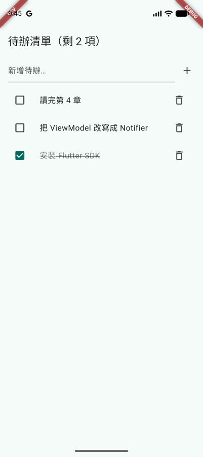
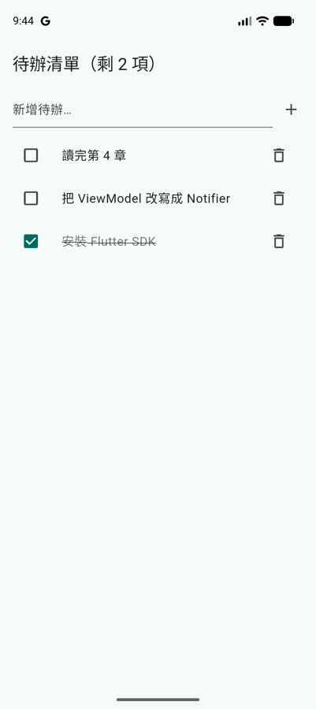

第 8 章 · 打包與發佈
Flavors 與建置設定
Android 開發者熟悉的 build type、product flavor、BuildConfig、release 簽章，在 Flutter 專案裡都還在，因為 android/ 就是一個普通的 Gradle 專案。不同的是，Dart 代碼看不到 Gradle 的設定，需要另外的機制把環境資訊傳進去。這一頁替待辦 App 加上 dev 與 prod 兩個環境，並設定好上架用的 release 簽章。
概念對照
說明| Android | Flutter |
|---|---|
Build type：debug、release，可以自訂更多 | Build mode：固定只有 debug、profile、release 三種，用 flutter run --release 這類參數切換 |
| Product flavor | 還是 Gradle 的 product flavor，用 --flavor dev 選擇 |
BuildConfig.DEBUG | kDebugMode、kProfileMode、kReleaseMode（package:flutter/foundation.dart） |
buildConfigField | --dart-define / --dart-define-from-file，Dart 端用 String.fromEnvironment 讀取 |
BuildConfig.FLAVOR | appFlavor（package:flutter/services.dart） |
versionName / versionCode | pubspec.yaml 的 version: 1.2.0+5，+ 前後分別對應兩者 |
三種 build mode
說明| 模式 | Dart 怎麼執行 | 用途 |
|---|---|---|
| debug | JIT，由 Dart VM 邊執行邊編譯 | 開發。支援 hot reload、斷點、assert。效能明顯比較差，動畫卡頓不代表正式版也會卡 |
| profile | AOT 編譯成機器碼 | 量測效能。和 release 幾乎一樣快，但保留了 DevTools 需要的追蹤資訊。只能在實機上執行 |
| release | AOT 編譯成機器碼 | 上架。移除所有除錯功能，assert 不會執行 |
這跟 Android 原生很不一樣：Kotlin 的 debug 版和 release 版效能差距不大，Flutter 則差很多。要判斷「這個畫面會不會卡」，一定要用 flutter run --profile 在實機上看。
Android 的 product flavor
說明在 android/app/build.gradle.kts 加上 flavor，寫法和原生專案完全一樣。dev 版的 applicationId 多了 .dev 後綴，所以兩個版本可以同時安裝：
App 名稱改成讀取 flavor 提供的字串資源：AndroidManifest.xml 裡的 android:label="@string/app_name"。
定義了 flavor 之後，執行和建置都要指定要用哪一個：
flutter run --flavor dev
flutter build appbundle --flavor prod每次都要打 --flavor 很麻煩，可以在 pubspec.yaml 指定預設值，沒有指定時就使用它：
flutter:
default-flavor: dev讓 Dart 知道目前的環境
說明Gradle 的 buildConfigField 只有 Kotlin 看得到，Dart 端要用兩種方式取得設定：
appFlavor：--flavor的名稱，Flutter 會自動傳進來。--dart-define-from-file：從 JSON 檔讀取任意的鍵值，Dart 端用bool.fromEnvironment、String.fromEnvironment讀取。也可以用--dart-define=KEY=VALUE一個個傳。
// config/dev.json
{
"ENABLE_LOGGING": true
}待辦 App 用 ENABLE_LOGGING 決定要不要掛上 Riverpod 的 ProviderObserver，在 logcat 印出每次狀態變化：
dev 版另外在左上角加上紅色的「DEV」標記：


用 dev 設定執行，操作一次之後 logcat 會出現類似這樣的記錄：
flutter run --flavor dev --dart-define-from-file=config/dev.json
I flutter : [Provider<int>#8bc70] 1這些值和 BuildConfig 一樣是編譯時常數。release 版裡 if (AppConfig.enableLogging) 為 false 的分支，會在編譯時直接被移除。
iOS 的 flavor
說明iOS 沒有 product flavor，對應的是 Xcode 的 scheme 與 build configuration。flutter run --flavor dev 在 iOS 上會尋找名為 dev 的 scheme，所以要在 Xcode 裡手動設定：
- 在 Project 的 Info 分頁，把 Debug、Release、Profile 三個 build configuration 各複製一份，命名為
Debug-dev、Release-dev、Profile-dev（prod 也一樣）。 - 新增名為
dev的 scheme，讓它的 Run、Archive 等動作分別使用對應的-devconfiguration。 - 在 Build Settings 裡，依 configuration 設定不同的 Bundle Identifier（例如
com.example.todo.dev）與 App 名稱。
Dart 端完全不用改：appFlavor 和 dart-define 在兩個平台都一樣。這也是建議把環境設定放在 Dart 端的原因，原生端只負責 App ID、名稱、圖示這些非改不可的設定。
Release 簽章
說明上架 Google Play 需要一把 upload key（下一頁會說明它和 Google 保管的 app signing key 的差別）。先用 JDK 的 keytool 產生：
keytool -genkeypair -v -keystore ~/upload-keystore.jks \
-keyalg RSA -keysize 2048 -validity 10000 -alias upload密碼與路徑寫在 android/key.properties，這個檔案和 keystore 都不能進版本控制（Flutter 範本的 android/.gitignore 已經排除了 key.properties、*.jks、*.keystore）：
storeFile=/Users/you/upload-keystore.jks
storePassword=…
keyAlias=upload
keyPassword=…Gradle 讀取這個檔案。沒有這個檔案時（例如其他開發者的電腦、一般的 CI），改用 debug 金鑰簽章，這樣大家都還能建置 release 版來測試：
用一把測試用的 keystore 建置後，可以用 Android SDK 的 apksigner 確認簽章：
apksigner verify --print-certs build/app/outputs/flutter-apk/app-prod-release.apk
Signer #1 certificate DN: CN=F4K Test Upload版本號
說明pubspec.yaml 的 version: 1.2.0+5 會同時套用到兩個平台：
+ 前面：1.2.0 | + 後面：5 | |
|---|---|---|
| Android | versionName | versionCode |
| iOS | CFBundleShortVersionString | CFBundleVersion |
建置時也可以用 --build-name=1.2.0 --build-number=42 覆寫。CI 常把 build number 設成 CI 的執行編號，確保每次上傳都比上一次大（兩個商店都會拒絕重複或變小的 build number）。
產出格式、大小與混淆
說明以下是待辦 App（prod、release）實際建置的結果：
| 指令 | 產出 | 大小 |
|---|---|---|
flutter build apk | 一個 APK，包含三種 CPU 架構 | 57.4 MB |
flutter build apk --split-per-abi | 每種架構各一個 APK | arm64：19.8 MB armeabi-v7a：17.1 MB x86_64：21.3 MB |
flutter build appbundle | AAB，上傳到 Google Play 用 | 53 MB（使用者只會下載自己裝置需要的部分） |
大小主要來自 Flutter 引擎與 AOT 編譯後的 Dart 代碼，每種 CPU 架構各一份；待辦 App 另外還帶了 drift 用的 SQLite 原生函式庫。想知道是哪些套件佔空間，加上 --analyze-size，再用 DevTools 開啟產生的 JSON 檔。
混淆分成兩部分：
- Kotlin/Java 代碼：Flutter 預設對 release 版啟用 R8，跟原生專案一樣。用到反射的原生函式庫，可能需要自己加 ProGuard 規則。
- Dart 代碼：加上
--obfuscate --split-debug-info=build/symbols。混淆後的 stack trace 要用flutter symbolize搭配這些符號檔還原，所以每一個上架的版本都要保存它的符號檔，就像保存 R8 的mapping.txt一樣。
flutter build appbundle --flavor prod \
--dart-define-from-file=config/prod.json \
--obfuscate --split-debug-info=build/symbols